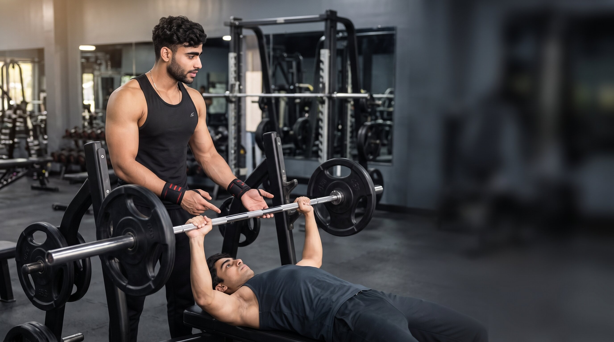

Primary Muscle
Chest
Master Proper Form, Build Strength & Maximize Chest Growth
The Bench Press is one of the most effective compound exercises for building upper-body strength, increasing muscle mass, and improving pushing power. Learn proper technique, avoid common mistakes, and maximize your chest development safely.

Chest
Barbell
Intermediate
Compound
Understand which muscles are primarily responsible for this exercise and which supporting muscles assist throughout the movement.
Main Target Muscle
Shoulder
Upper Arm
Stabilizer
Discover how this exercise improves strength, muscle development, performance, and overall movement quality.
Develops pressing strength by increasing force production through the chest, shoulders, and triceps.
Stimulates muscle hypertrophy by placing the primary muscles under progressive overload.
Enhances explosive pushing ability useful for sports and everyday activities.
Strengthens supporting muscles that help stabilize the shoulders throughout pressing movements.
Carries over to everyday pushing movements and improves overall upper body function.
Improves strength and coordination for sports that require powerful upper body movements.
Follow these step-by-step instructions to perform the bench press safely, improve your technique, and maximize muscle activation.
Lie flat on the bench with your eyes directly underneath the barbell. Keep your feet firmly planted on the floor and maintain a natural arch in your lower back.
Drive your feet into the floor before lifting the bar to create a stable base.
Grip the bar slightly wider than shoulder-width. Wrap your thumbs around the bar and keep your wrists straight throughout the movement.
Squeeze the bar tightly to improve upper-body stability and control.
Slowly lower the bar toward the middle of your chest while keeping your elbows slightly tucked and maintaining full-body tension.
Inhale during the lowering phase and avoid bouncing the bar off your chest.
Push the bar upward in a controlled path until your arms are fully extended without aggressively locking your elbows. Maintain full-body tension and keep your shoulders retracted throughout the lift.
Exhale as you press the bar and focus on driving the weight upward using your chest, shoulders, and triceps together.
Continue performing smooth, controlled repetitions while maintaining proper breathing, a stable body position, and consistent bar path. Finish the set before your technique begins to deteriorate.
Prioritize perfect repetitions over lifting heavier weights. Consistent technique produces better long-term strength and muscle development.
Learn the most common technique mistakes, understand why they matter, and discover how to correct them for safer and more effective training.
Allowing the elbows to flare too far away from the torso during the lowering phase.
Places unnecessary stress on the shoulders while reducing chest activation and pressing efficiency.
Keep your elbows approximately 45–75° from your torso throughout the movement.
Using momentum by bouncing the barbell off the chest instead of controlling the descent.
Increases injury risk and removes tension from the target muscles.
Lower the bar under control, briefly pause near the chest, then press smoothly.
Holding the bar excessively wide or too narrow, creating poor pressing mechanics.
Reduces strength, limits muscle activation, and may place extra stress on the wrists and shoulders.
Choose a grip that keeps your forearms nearly vertical when the bar touches your chest.
Choosing a weight that cannot be controlled with proper technique.
Greatly increases the chance of failed repetitions, poor movement quality, and potential injury.
Master proper technique first, then increase the load gradually using progressive overload.
Improve your technique with practical coaching cues that help you train more effectively, lift safely, and build consistent long-term progress.
"Master perfect technique before chasing heavier weights. Good form creates strength, while poor form creates setbacks."
Keep your feet firmly planted on the floor throughout every repetition.
Retract your shoulder blades before unracking the bar to improve stability.
Lower the bar under control instead of relying on momentum.
Stop the set when your technique begins to break down, not only when your muscles are fatigued.
Increase the weight gradually while maintaining full control over every repetition.
Start with the right variation for your current fitness level and gradually progress toward more challenging movements as your strength and technique improve.
Learn proper pressing mechanics while reducing bodyweight resistance. Perfect for beginners building confidence and technique.
Improve unilateral strength, stability, coordination, and balanced muscle development before progressing to advanced variations.
Eliminate momentum to develop explosive strength, greater control, and maximum power throughout the entire pressing movement.
Find clear, science-based answers to the most common questions about the Bench Press to improve your technique, train safely, and maximize your results.
Yes. When performed with proper technique, an appropriate weight, and controlled repetitions, the Bench Press is a safe and effective exercise for beginners.
In most cases, yes. Lower the bar under control until it lightly touches the mid-chest while maintaining shoulder stability and proper elbow position.
For muscle growth, perform 3–4 sets of 8–12 repetitions. For strength, use heavier loads for 3–6 repetitions while maintaining excellent technique.
The Bench Press is one of the best chest-building exercises, but combining it with incline, decline, and isolation movements produces more balanced development.
Daily Bench Press training is generally not recommended. Most people benefit from allowing 48–72 hours of recovery between intense chest training sessions.
Continue building your strength with these recommended exercises. Each variation targets your muscles from a different angle and helps you develop balanced strength and better movement patterns.
Learning proper technique is only the first step. Build your strength, improve your form, and explore more science-based fitness guides designed to help you achieve long-term results.